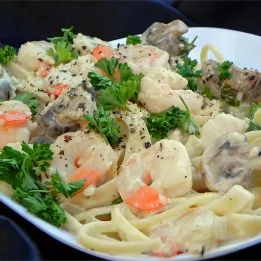

Shrimp Alfredo

Description
This simple yet delicious shrimp alfredo recipe is great for any occasion. What's not to love about the perfect comination of creamy alfredo, sauteed shrimp and your favorite pasta.
Ingredients
- 1 pound fettuccini pasta(or pasta of you're choice)
- 1 tablespoon butter
- 1 pound cooked shrimp - peeled and deveined
- 4 cloves garlic, minced
- 1 cup half-and-half
- 6 tablespoons grated Parmesan cheese
- 1 tablespoon chopped fresh parsley
- salt to taste
Steps
- Fill a large pot with lightly salted water and bring to a rolling boil. Cook fettuccine at a boil until tender yet firm to the bite, about 8 minutes. Drain.
- Heat butter in a large skillet over medium heat. Cook and stir shrimp and garlic in butter for 1 minute. Pour in half-and-half; stir. Add Parmesan cheese, 1 tablespoon at a time, stirring constantly. Mix in parsley; season with salt. Simmer, stirring frequently, until sauce is thickened.
- Stir fettuccine into sauce until evenly coated; serve hot.